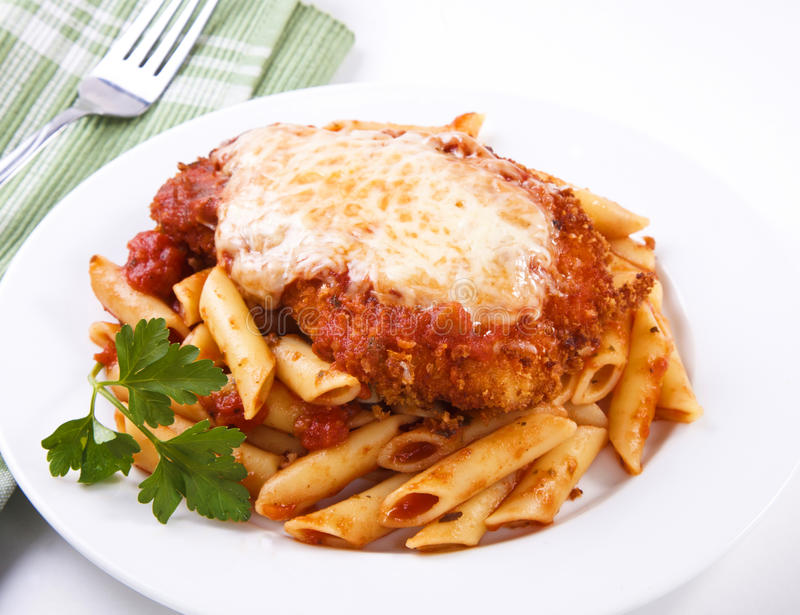

CHICKEN PARMESAN

'Chicken parmigiana' is a popular dish consisting of breadcrumbs-coated chicken breasts that are topped with tomato sauce and cheese, then baked until the cheese melts and the chicken is properly cooked.
Although it has an Italian-sounding name, chicken parmigiana is actually an American dish, derived from an Italian dish called melanzana alla parmigiana, or eggplant parmigiana.
Ingredients:
- Chicken breasts
- Eggs, for the egg wash
- Flour, salt, and pepper to dredge
- Italian bread crumbs and parmesan for the crust
- A good cooking oil
- Marinara Sauce
- Shredded Mozzarella
- Parsley or basil to garnish
Steps:
- Make the easy 20-minute homemade marinara and while it simmers, continue to prepare the chicken.
- Cut 2 chicken breasts in half length-wise for 4 cutlets and season with salt and pepper.
- Set up 3 shallow bowls: In the first bowl, combine flour, salt and pepper, in the second bowl, beat together 2 eggs and in the third bowl, stir together parmesan and bread crumbs
- Dredge chicken in flour, dusting off excess, then dip in eggs and turn to coat in bread crumbs.
- Once all chicken is breaded, heat a large non-stick skillet with enough oil to lightly coat the bottom and saute 3-4 minutes per side or until just cooked through at 165˚F on an instant-read thermometer.
- Pour half of your marinara sauce in a casserole dish. Arrange chicken pieces over marinara in a single layer. Spoon on marinara sauce and top with cheese then bake in a casserole dish at 425˚F for 15 minutes until cheese is melted and sauce is bubbling.
Go back